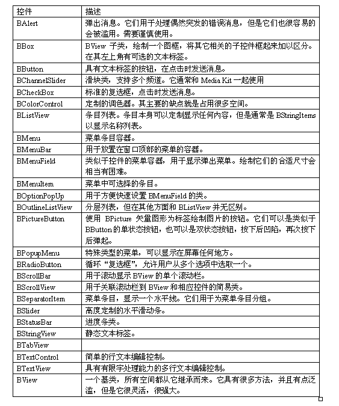

第十八课¶
我们已经学了有关菜单和按钮的内容，接下来我们将要开始学习其他可用的窗口控件类型，如下表所示：
上面给出了很多不同的类！乍看之下，乱花迷眼，但略加提炼，抑或稍加思考，您会发现她们形貌相仿，并非全异。您可能希望将这张表放在手边，以备不时之需。我们并不会对上述每个类都详细阐述，所略过的类都比较简单，非常易于理解。
重访类型转换¶
返回第七节，我们了解了类型转换，例如，将变量中的数据转译为其他不同的类型。在 C 语言中进行转换时存在的问题之一就是安全性 - 无论何时进行转换，它总会成功。如果您选择一个错误的类进行转换，它仍然会成功，这显然会造成无法预期的结果。C++ 提供了不同类型的转换。并且推荐使用 C++ 的转换方式，除非您是在编写 C 代码。如下所示：
static_cast<TypeToCastTo *>(pointerToCast);
static 转换用于将一种类型转换为其他类型。它依赖于编译期信息，并且通常用于常用的C转换方法的目的 - 修改指针类型和算术转换。仅当 C++ 语言支持的两种类型之间的转换时，它才会成功。
dynamic_cast<TypeToCastTo *>(pointerToCast);
和 static 转换不同，dynamic 转换将会是 Haiku 编程中最常用的转换类型方式。它们用于安全得导航到一个继承体系。如果继承没有将 “from” 和 “to” 类型链接到一起，那么就会返回 NULL。这样，您就仅可以转换为这些您认为可以转换的指针类型。我们将会在这节的项目中用到它们。
const_cast<TypeToCastTo *>(pointerToCast);
const 转换将会添加或者移除指针的可变度。例如，有一些实例中，函数将会接受一个非 const 参数，但不能够对其进行修改。传递一个常量指针给这些函数将会需要进行 const 转换。
reinterpret_cast<TypeToCastTo *>(pointerToCast>;
reinterpret_cast 转换很少使用。它将一个指针从一种类型转换为其他类型，而忽略这两者之间的相关性。基本上所有 reinterpret 转换可以完成的任务都可以由 static 转换来完成，并且其他的转换通常都不可移植，因此这种类型的转换仅用于确实需要的地方，例如转换函数指针类型。
项目：使用列表控件¶
本项目，称为 ListTitle，将会使用列表控件，即 BListView 类。在 Haiku API 中发现基于列表的控件使用轻量级的条目。BMenu 和BListView 实际上完成了大部分的工作，而 BMenuItem 和 BListItem 则是非常简单的类。以下面的方式设计类将会节约内存。
- 在 Paladin 中新建一个项目，但是这次使用 “GUI with Main Window” 模板以节约部分输入 - 这个模板将会为 App 和 MainWindow 类创建基本的代码。
- 我们的项目和目标命名为 ListTitile。
- 完成创建后，打开 App.cpp，修改程序的 MIME 标识为 “application/x-vnd.test-ListTitle”，然后关闭。
- 打开 MainWindow.h，在其顶部添加 ListView.h 头文件。
- 在 MainWindow 类定义底部添加添加一个 “private:” 访问标号关键字。
- 在 MainWindow 定义的 private 块中，声明属性 BListView *fListView。我们不仅仅在窗口构造函数中使用 fListView，因此使用指针将很有必要。
您的 App 类文件和 MainWindow.h 文件应该如下所示：
App.h¶
#ifndef APP_H
#define APP_H
#include <Application.h>
class App : public BApplication
{
public:
App(void);
};
#endif
App.cpp¶
#include "App.h"
#include "MainWindow.h"
App::App(void)
: BApplication("application/x-vnd.test-ListColors")
{
MainWindow *mainwin = new MainWindow();
mainwin->Show();
}
int
main(void)
{
App *app = new App();
app->Run();
delete app;
return 0;
}
MainWindow.h¶
#ifndef MAINWINDOW_H
#define MAINWINDOW_H
#include <Window.h>
#include <ListView.h>
class MainWindow : public BWindow
{
public:
MainWindow(void);
void MessageReceived(BMessage *msg);
private:
BListView *fListView;
};
#endif
现在进入正题：设置 MainWindow 的控件并且让它们有所动作。 打开 MainWindow.cpp，然后做如下修改：
MainWindow.cpp¶
#include "MainWindow.h"
#include <Button.h>
#include <ListItem.h>
#include <ScrollView.h>
enum
{
M_RESET_WINDOW = 'rswn',
M_SET_TITLE = 'sttl'
};
MainWindow::MainWindow(void)
: BWindow(BRect(100,100,500,400),"The Weird World of Sports",
B_TITLED_WINDOW, B_ASYNCHRONOUS_CONTROLS | B_QUIT_ON_WINDOW_CLOSE)
{
// 下面我们将创建一个BView，它将覆盖窗口内部所有白色区域，这样
// 我们就可以选择一个背景颜色。您将会希望在你的项目的窗口中这样
// 做 -- 您的项目看起来将会很专业。
BRect r(Bounds());
BView *top = new BView(r,"topview",B_FOLLOW_ALL,B_WILL_DRAW);
AddChild(top);
// ui_color()返回一个系统颜色，例如窗口标签颜色，菜单文本颜色，
// 等等。Panel Background颜色用于背景视图，如下所示。
top->SetViewColor(ui_color(B_PANEL_BACKGROUND_COLOR));
// 创建一个按钮，并将其放置在窗口的右下角。
// 用于BButton图框的BRect是空的，是因为我们将让其重设其尺寸，然
// 后根据按键的实际大小将其移动到右下角，因此无需指定其尺寸。
BButton *reset = new BButton(BRect(), "resetbutton", "Reset",
new BMessage(M_RESET_WINDOW),
B_FOLLOW_RIGHT | B_FOLLOW_BOTTOM);
top->AddChild(reset);
reset->ResizeToPreferred();
// 将按钮放置到窗口右下角，按钮与窗口边界的间隙为10个像素。
// 10个像素某种程度上说是用于控件填充的事实标准。它已经足以
// 让控件看起来不拥挤，并且也不占用大量空间。
reset->MoveTo(Bounds().right - reset->Bounds().Width() - 10.0,
Bounds().bottom - reset->Bounds().Height() - 10.0);
r = Bounds();
r.InsetBy(10.0,10.0);
// 使用BScrollView，在确定关联到BScrollView的控件尺寸时，您
// 必须补偿用于滚动栏的宽度/高度。B_V_SCROLL_BAR_WIDTH是用于
// 水平滚动栏宽度的已定义常量。
r.right -= B_V_SCROLL_BAR_WIDTH;
// 图框和Bounds()原理相似，除了它会返回控件在父视图坐标空间内
// 的尺寸和位置。这会使fListView得底部停靠在控件上方 10 个像素
// 的地方。
r.bottom = reset->Frame().top - 10.0 - B_H_SCROLL_BAR_HEIGHT;
// 这些参数多数和BView相同，除了我们也可以指定是否用户能够在列
// 表中选择单个条目或者点击条目时按下键盘上修饰键选择多个项目。
fListView = new BListView(r, "colorlist", B_SINGLE_SELECTION_LIST,
B_FOLLOW_ALL);
// 我们在fListView上并未调用AddChild(),因为BScrollView将会为我们
// 完成这个操作。创建时，它创建了滚动栏并且把指定的视图作为其执行
// 滚动时的目标。在BScrollView关联到窗口时，它会为我们调用fListView
// 上的AddChild()。
// 如果我们在创建滚动视图前，调用了fListView的AddChild()，当我们在
// BScrollView中调用AddChild()时，我们的程序将进入调试器 -- 一个视
// 图仅可以有一个父视图。
BScrollView *scrollView = new BScrollView("scrollview", fListView,
B_FOLLOW_ALL, 0, true, true);
top->AddChild(scrollView);
// 任何时候列表选择状态发生改变，都会向窗口发送 BListView
// 的选择消息。
fListView->SetSelectionMessage(new BMessage(M_SET_TITLE));
fListView->AddItem(new BStringItem("Toe Wrestling"));
fListView->AddItem(new BStringItem("Electric Toilet Racing"));
fListView->AddItem(new BStringItem("Bog Snorkeling"));
fListView->AddItem(new BStringItem("Chess Boxing"));
fListView->AddItem(new BStringItem("Cheese Rolling"));
fListView->AddItem(new BStringItem("Unicycle Polo"));
}
void
MainWindow::MessageReceived(BMessage *msg)
{
switch (msg->what)
{
case M_RESET_WINDOW:
{
fListView->DeselectAll();
break;
}
case M_SET_TITLE:
{
int32 selection = fListView->CurrentSelection();
if (selection < 0)
{
// 这个代码之所以在这里是因为我们按下 Reset按钮时，
// 选取状态改变，并发送 M_SET_TITLE。但是由于并未
// 选中任何内容，CurrentSelection()返回 -1。
SetTitle("The Weird World of Sports");
break;
}
BStringItem *item = dynamic_cast<BStringItem*>(
fListView->ItemAt(selection));
if (item)
SetTitle(item->Text());
break;
}
default:
{
BWindow::MessageReceived(msg);
break;
}
}
}
这个项目和上节中的项目并没有太多不同之处。通过调用 BListView 的 SetSelectionMessage() 方法，我们让标题能够在用于点击列表中的条目时及时进行更新。通常我们使用 BListView 时，并不会使用这个方法。相对使用更加频繁的是：
SetInvocationMessage()，用于在用于双击条目时发送消息。需要注意的是，DeselectAll() 也会引起选中消息的发送，即使并没有选择，因此有必要处理这种情况，当 CurrentSelection() 返回负值时，标明没有选择。 幸好您已经对 BView 和常用控件如何一起应用到程序中有所感觉。它们大多数都需要使用 BRect 标识其尺寸和位置，const char * 标识控件名称的，两个整型标识其尺寸修改模式和其他的行为标志。许多类也具有标签和当控件修改或调用时发送的消息，有其是那些继承自 BControl 的类。控件创建后，它将通过 AddChile() 函数关联到 BWindow 或 BView。控件发送的消息通常发送到其所关联到的窗口，但是它也可以定位到其他目标，例如其父类 BView 或者全局的 BApplication。
需要记住的内容¶
BListView¶
- AddItem(BListItem *item) - 添加条目到列表。
- int32 CountItems(void) - 返回列表中条目的数量。
- BListItem *RemoveItem(int32 index) - 移除并返回指定索引的条目，如果不存在，则返回 NULL。
- void RemoveItem(BListItem *item) - 从列表中移除指定条目。如果列表中不存在，则不作任何动作。
- int32 CurrentSelection(int32 index = -1) - 返回当前选中项目的索引，如果不存在，则为 -1。index 参数用于获取支持多条目选择的列表中所有的选中项目。通常会有一个 while() 循环来获取所有的条目标记，并且当返回 -1 是，它将会退出。
- void Select(itn32 index, bool extend = false) - 从指定索引中选择条目。如果extend为false，在指定条目选定前，所有其他的条目将会取消选定。
- void Select(int32 start, int32 end, bool extend = false) - 选中 start 到 end 之间的所有条目。如果 extend 为 false，在指定条目选定前，其他的所有条目取消选定。
- void DeselectAll(void) - 取消选定列表中的所有条目。